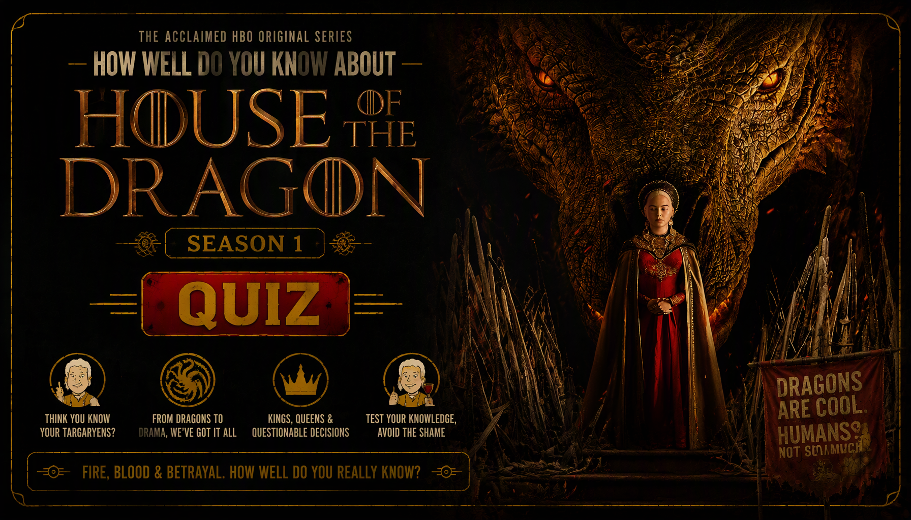

HOUSE OF THE DRAGON • TV SERIES • SEASON 1 TRIVIA
House of the Dragon Season 1 Quiz
Think you know House of the Dragon Season 1? Test your knowledge of Rhaenyra, Daemon, Viserys, Alicent, the Targaryens, their dragons and the dangerous struggle for the Iron Throne.
Every question has one correct answer. Choose carefully and see how well you remember the royal rivalries, dragon battles, family secrets and shocking events from Season 1.
This quiz contains major story details and spoilers from House of the Dragon Season 1.


ABOUT THE QUIZ
The House of the Dragon Season 1 Quiz is a 30-question trivia challenge for fans of the fantasy drama series. Set nearly two centuries before the events of Game of Thrones, the series explores the Targaryen dynasty and the growing conflict over the succession to the Iron Throne.
The questions cover Rhaenyra Targaryen, Daemon Targaryen, King Viserys I, Alicent Hightower, the Velaryon family and other important characters whose choices shape the future of the Seven Kingdoms.
The quiz also tests your memory of the dragons, the Stepstones conflict, the Driftmark succession dispute, Aegon's coronation and the events that lead to the Season 1 finale.
House of the Dragon Season 1 Details
Series: House of the Dragon
Season: 1
Episodes: 10
Genre: Fantasy, political drama, action and tragedy
Central Conflict: The Targaryen royal family faces an increasingly bitter struggle over who should inherit the Iron Throne.
Major Storylines: Rhaenyra's claim to the throne, Daemon's ambitions, Alicent's changing loyalties, the Velaryon family disputes, the dragons and the events that divide the royal family.
WHAT THIS QUIZ COVERS
The questions cover characters, dragons, royal titles, political alliances, family rivalries and major events from Season 1.
The Targaryens and the Iron Throne
Test your knowledge of King Viserys I, Princess Rhaenyra, Prince Daemon and the complicated question of who should inherit the Iron Throne.
Dragons and Their Riders
Remember the names of dragons such as Syrax, Caraxes, Vhagar, Meleys and Arrax, along with the characters who ride or bond with them.
The Hightowers and the Velaryons
Questions explore Alicent Hightower, Corlys Velaryon, Rhaenys Targaryen and the rival claims and alliances that shape the royal court.
Driftmark and the Succession Crisis
Recall the dispute over Driftmark's succession, the confrontation involving Aemond and Lucerys, and the political tensions surrounding the Velaryon family.
The Season Finale
The quiz also covers Aegon's coronation, the escape from the Red Keep, the appearance of Meleys and the events that lead to the shocking final moments of Season 1.
HOW THE QUIZ WORKS
The quiz contains 30 questions. Every question has four possible choices, but only one answer is correct. Read each question carefully and select the answer you believe is correct.
Each correct answer gives you 1 point, while an incorrect answer gives you 0 points. Your final score is converted into a percentage out of 100%.
Your result represents how well you remember the characters, dragons, royal rivalries and major events of House of the Dragon Season 1.
Quiz Navigation
Starting the Quiz
Select START QUIZ on the opening screen to begin. The first question will appear with four possible answers.
Selecting an Answer
Read all four choices before making your decision. Select the answer you believe is correct. The quiz automatically moves to the next question shortly after you select an answer.
Next and Back Buttons
Use Next to move forward and Back to revisit an earlier question. Your previous answer remains selected when you return to a question.
Finishing the Quiz
Answer all 30 questions to complete the quiz. Submit your answers on the final question to see your score, accuracy and knowledge level.
Try Again and Challenge Friends
Select TRY AGAIN to replay the quiz. You can also share your result or challenge friends to see who remembers more details from Season 1.
FAQ
How many questions are in the quiz?
There are 30 questions in total, and every question has four possible choices.
What is the maximum score?
The maximum result is 100%. Each correct answer contributes one point before the score is converted into a percentage.
What topics are covered?
The quiz focuses on House of the Dragon Season 1, including Rhaenyra, Daemon, Viserys, Alicent, the dragons, the Iron Throne and the succession crisis.
Can I take the quiz again?
Yes. Select TRY AGAIN after completing the quiz to start another attempt and improve your score.
Can I challenge my friends?
Yes. Select CHALLENGE YOUR FRIENDS after completing the quiz to share the challenge.
Spoiler Warning
This quiz contains spoilers for House of the Dragon Season 1. Questions may reveal character relationships, deaths, political disputes, dragon encounters and major developments from the season.
If you have not watched Season 1, consider watching it before taking the quiz to avoid having important story details spoiled.